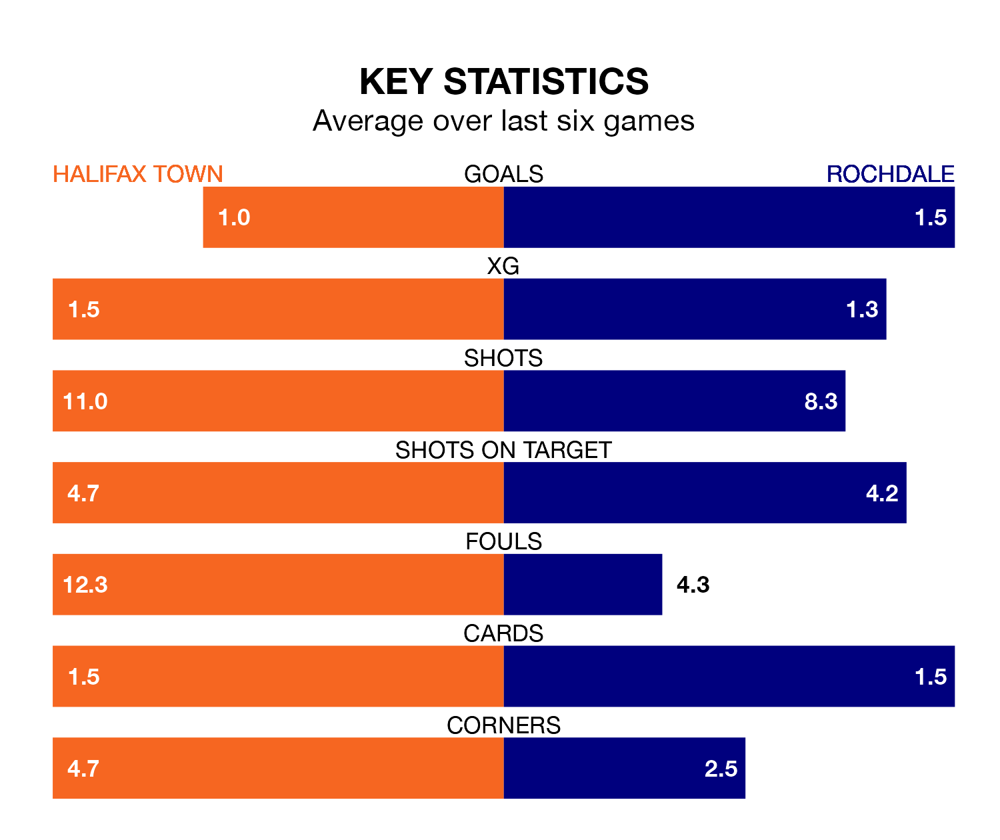

Halifax Town host Rochdale on Saturday at the Shay Stadium in National League.
In their last league match, on December 16, Halifax beat Gateshead 2-0 away, with goals from Kane Thompson-Sommers and Millenic Alli.
Rochdale drew, 0-0 at home against York City.
With Samuel William Johnson between the sticks, Halifax can rely on one of the league's safest pair of hands. He has kept eight clean sheets in his 23 appearances this season, and no 'keeper has prevented the opposition scoring more often in National League.
In Rochdale's net, Louie Moulden has four clean sheets in 24 games. He has conceded a goal every 64 minutes, 90% more often than the 122 minutes between goals for Samuel William Johnson.
With 26 goals in 23 games so far this season, Town are scoring at below the league average rate with 1.1 goals per game. But they are conceding fewer than average too, letting in 21 goals at a rate of 0.9 per game.
The Dale, meanwhile, are above average scorers, with 1.7 goals per game, compared to a league average of 1.5. They have conceded 1.5 goals per game.
The Shaymen are ninth in the table after 23 games, of which they have won nine and drawn eight, earning 35 points.
The visitors are one place behind the home team in 10th, with nine wins and seven draws putting them on 34 points.
Halifax are in mixed form in National League, with two wins and two draws from their last six games.
With three wins and a draw over that period, Rochdale's form is slightly better – they have taken 10 points from 18, compared to Halifax's eight.
